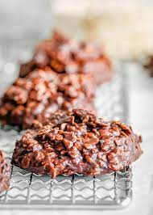

No Bake Cookies Recipe

Description of the dish
Tasty no-bake cookies made with oatmeal, peanut butter and cocoa.
Start timing when mixture reaches a full rolling boil; this is the trick to successful cookies.
If you boil too long the cookies will be dry and crumbly.
If you don't boil long enough, the cookies won't form properly.
Ingrediants
- 1 - 3/4 cups white sugar
- 1/2 cup of milk
- 1/2 cup of butter
- 4 tbsp unsweetened cocoa powder
- 1/2 cup of crunchy peanut butter
- 3 cups quick cooking oats
- 1 tsp vanilla extract
Steps
- In a medium saucepan, combine sugar, milk, butter, and cocoa.
Bring to a boil, and cook for 1 1/2 minutes. Remove from heat, and stir in peanut butter, oats, and vanilla.
Drop by teaspoonfuls onto wax paper. Let cool until hardened.